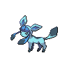

グレイシアのデータ
基本ステータス
もちもの・メダル・条件付き効果なし。割合の値は％です。待ち時間は短縮率、移動速度はゲーム内の値です。
| Lv | HP | 攻撃 | 防御 | 特攻 | 特防 | 移動速度 | 急所率 | 待ち時間 | HP吸収率 | 通常攻撃の速さ | 貫通 |
|---|---|---|---|---|---|---|---|---|---|---|---|
| 1 | 3200 | 20 | 70 | 100 | 64 | 3700 | 0 | 0 | 0 | 10 | 0 |
| 2 | 3278 | 22 | 78 | 117 | 68 | 3700 | 0 | 0 | 0 | 12 | 0 |
| 3 | 3367 | 24 | 80 | 137 | 72 | 3700 | 0 | 0 | 0 | 14.29 | 0 |
| 4 | 3820 | 36 | 106 | 238 | 93 | 3700 | 0 | 0 | 0 | 25.93 | 0 |
| 5 | 3938 | 39 | 113 | 265 | 99 | 3850 | 10 | 5 | 0 | 28.97 | 0 |
| 6 | 4074 | 43 | 121 | 295 | 105 | 3850 | 10 | 5 | 0 | 32.46 | 0 |
| 7 | 4230 | 47 | 130 | 330 | 113 | 4000 | 10 | 5 | 0 | 36.47 | 0 |
| 8 | 4410 | 52 | 141 | 370 | 121 | 4000 | 10 | 5 | 0 | 41.09 | 0 |
| 9 | 4617 | 58 | 153 | 416 | 131 | 4150 | 20 | 5 | 0 | 46.41 | 0 |
| 10 | 4855 | 65 | 167 | 469 | 143 | 4150 | 20 | 5 | 0 | 52.53 | 0 |
| 11 | 5129 | 73 | 183 | 530 | 155 | 4300 | 20 | 10 | 0 | 59.57 | 0 |
| 12 | 5444 | 82 | 201 | 600 | 170 | 4300 | 20 | 10 | 0 | 67.67 | 0 |
| 13 | 5805 | 92 | 223 | 681 | 188 | 4300 | 20 | 10 | 0 | 76.99 | 0 |
| 14 | 6221 | 103 | 247 | 773 | 207 | 4300 | 20 | 10 | 0 | 87.7 | 0 |
| 15 | 6700 | 116 | 275 | 880 | 230 | 4300 | 20 | 10 | 0 | 100 | 0 |

グレイシア急所・HP吸収などの仕様
急所の対象は通常攻撃・こおりのつぶて・こごえるかぜです。
Lv4から、特攻系のダメージを与えたとき、その12.5%を回復する効果を得ます。通常攻撃のHP吸収率とは別の情報です。
ほかのブイズ4匹と同じチームにいると、通常攻撃速度が1%上がるとの記載があります。この条件は計算へ自動適用しません。
通常攻撃
効果・条件の説明
3回目が強化攻撃になり、命中すると氷の結晶を2個獲得します。結晶は最大8個、持続5秒で、追加獲得すると時間が更新されます。
わざ1
スピードスター
効果・条件の説明
周囲に星を作り、その後の通常攻撃・強化攻撃に合わせて放ちます。
効果・条件
星は4つで、通常攻撃の命中では1つ、強化攻撃では2つを追加で飛ばします。進化すると、このわざの効果はその時点で終了します。
つららばり
効果・条件の説明
蓄えた氷の結晶を指定した相手へ連射します。結晶がなくても少数を生成して攻撃します。
通常版の効果・条件
結晶がなければ2個作り、1回の使用で最大12個を発射します。同じ相手への連続命中でダメージが5%ずつ増え、最大35%増えます。相手チームの別のポケモンに当たるとそこで砕けて周囲も攻撃します。狙っていない野生ポケモンは貫通してダメージを与えますが、その命中では連続命中の増加効果は付きません。使用すると、こおりのつぶての待ち時間が2秒、フリーズドライが2.5秒短くなります。
つららばり+
効果・条件の説明
強化後の変更点：氷の結晶1つごとに、相手の残りHPの0.5%の追加ダメージを与えます。狙った相手以外の野生のポケモンを貫通した場合、その野生のポケモンには追加分が発生しません。
通常版の効果・条件
結晶がなければ2個作り、1回の使用で最大12個を発射します。同じ相手への連続命中でダメージが5%ずつ増え、最大35%増えます。相手チームの別のポケモンに当たるとそこで砕けて周囲も攻撃します。狙っていない野生ポケモンは貫通してダメージを与えますが、その命中では連続命中の増加効果は付きません。使用すると、こおりのつぶての待ち時間が2秒、フリーズドライが2.5秒短くなります。
こごえるかぜ
効果・条件の説明
短く移動し、次の通常攻撃で蓄えた氷の結晶を放ちます。
通常版の効果・条件
使用後5秒以内の次の通常攻撃で結晶を飛ばし、発射した数と同じだけ結晶を得ます。4個以上命中すると相手が減速し、結晶1個につき8%、最大6段階まで強まります。結晶がない状態で使うと2個得ます。
通常版の効果・条件
4個以上の結晶による減速は1秒間続きます。
こごえるかぜ+
効果・条件の説明
強化後の変更点：氷の結晶1つごとに、相手の残りHPの1.5%の追加ダメージを与えます。
通常版の効果・条件
使用後5秒以内の次の通常攻撃で結晶を飛ばし、発射した数と同じだけ結晶を得ます。4個以上命中すると相手が減速し、結晶1個につき8%、最大6段階まで強まります。結晶がない状態で使うと2個得ます。
通常版の効果・条件
4個以上の結晶による減速は1秒間続きます。
わざ2
しっぽをふる
効果・条件の説明
指定した相手へダメージを与え、防御・特防・移動速度を下げます。
効果・条件
相手の防御と特防を2秒間30%下げ、移動速度を20%下げます。使用すると次の通常攻撃が強化攻撃になります。
効果・条件
相手の移動速度20%低下は1.5秒間で、防御・特防低下の2秒間とは別です。
こおりのつぶて
効果・条件の説明
移動速度と通常攻撃速度を上げ、通常攻撃で氷の塊を投げるようにします。
通常版の効果・条件
移動速度が1秒間40%、通常攻撃速度が2.5秒間60%上がります。氷の塊が当たった相手の移動速度を30%下げ、命中するごとに結晶が2個たまります。「つららばり」の発射中や、「こごえるかぜ」の使用後から結晶を撃つまでの間に使っても、結晶を2個得ます。
通常版の効果・条件
氷の塊が命中した相手の移動速度を1秒間30%下げます。
こおりのつぶて+
効果・条件の説明
強化後の変更点：通常攻撃の速度上昇が2.5秒間100%になります。
通常版の効果・条件
移動速度が1秒間40%、通常攻撃速度が2.5秒間60%上がります。氷の塊が当たった相手の移動速度を30%下げ、命中するごとに結晶が2個たまります。「つららばり」の発射中や、「こごえるかぜ」の使用後から結晶を撃つまでの間に使っても、結晶を2個得ます。
通常版の効果・条件
氷の塊が命中した相手の移動速度を1秒間30%下げます。
フリーズドライ
効果・条件の説明
冷気を飛ばし、命中地点か一定距離で爆発させます。
通常版の効果・条件
爆発が当たると自分の特攻が50%上がり、相手1匹につき結晶を2個得ます。残った氷の範囲は相手の移動速度を30%下げ、範囲に居続けるとこおり状態にします。
通常版の効果・条件
命中による特攻50%上昇は4秒間続きます。氷の範囲による30%の減速は3秒間です。範囲内に2.5秒間とどまった相手を0.6秒間こおり状態にします。
フリーズドライ+
効果・条件の説明
強化後の変更点：爆発が命中した相手1体につき、氷の結晶をさらに1つ獲得します。
通常版の効果・条件
爆発が当たると自分の特攻が50%上がり、相手1匹につき結晶を2個得ます。残った氷の範囲は相手の移動速度を30%下げ、範囲に居続けるとこおり状態にします。
通常版の効果・条件
命中による特攻50%上昇は4秒間続きます。氷の範囲による30%の減速は3秒間です。範囲内に2.5秒間とどまった相手を0.6秒間こおり状態にします。
ユナイトわざ
ユナイトわざ使用後の共通強化
移動速度30%上昇、通常攻撃速度35%上昇、最大HPの20%のシールド（6秒）
ダイヤモンドステージ
効果・条件の説明
跳び上がって移動速度を上げ、指定方向に氷の範囲を作ります。
効果・条件
跳び上がると移動速度が1秒間40%上がります。氷の範囲は6秒間残り、自分は範囲内で移動速度が50%上がり、1秒ごとに結晶を1個得ます。相手は移動速度が2秒間50%下がり、範囲内にいると1秒ごとに残り時間を更新します。